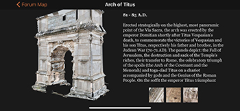
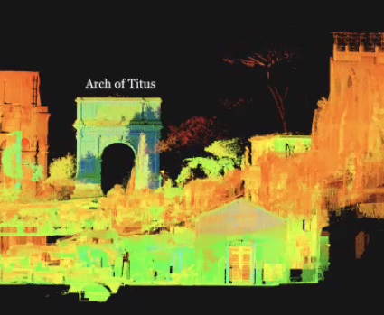
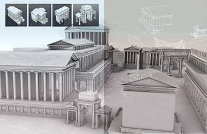
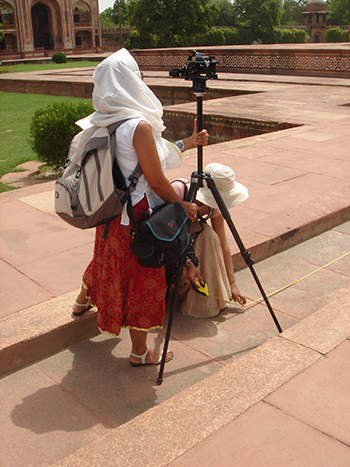

<!DOCTYPE html>
<html xmlns="http://www.w3.org/1999/xhtml" xml:lang="en-gb" lang="en-gb" dir="ltr">

<!-- Mirrored from dharma.crc.nd.edu/ by HTTrack Website Copier/3.x [XR&CO'2014], Mon, 06 May 2024 15:06:37 GMT -->
<!-- Added by HTTrack --><meta http-equiv="content-type" content="text/html;charset=utf-8" /><!-- /Added by HTTrack -->
<head>
	<meta name="viewport" content="width=device-width, initial-scale=1.0" />
	<meta charset="utf-8" />
	<base  />
	<meta name="author" content="Kristina Davis" />
	<meta name="description" content="Dharma3D website" />
	<meta name="generator" content="Joomla! - Open Source Content Management" />
	<title>Home</title>
	<link href="templates/protostar-dharma/favicon.ico" rel="shortcut icon" type="image/vnd.microsoft.icon" />
	<link href="index.php/component/search/index5496.html?id=20&amp;Itemid=101&amp;format=opensearch" rel="search" title="Search Dharma" type="application/opensearchdescription+xml" />
	<link href="templates/protostar-dharma/css/template.css" rel="stylesheet" />
	<script src="media/jui/js/jquery.minf928.js?d1d4c933315f4824150e82cd6bd46437"></script>
	<script src="media/jui/js/jquery-noconflictf928.js?d1d4c933315f4824150e82cd6bd46437"></script>
	<script src="media/jui/js/jquery-migrate.minf928.js?d1d4c933315f4824150e82cd6bd46437"></script>
	<script src="media/system/js/captionf928.js?d1d4c933315f4824150e82cd6bd46437"></script>
	<script src="media/jui/js/bootstrap.minf928.js?d1d4c933315f4824150e82cd6bd46437"></script>
	<script src="templates/protostar-dharma/js/template.js"></script>
	<!--[if lt IE 9]><script src="/media/system/js/html5fallback.js?d1d4c933315f4824150e82cd6bd46437"></script><![endif]-->
	<script>
jQuery(window).on('load',  function() {
				new JCaption('img.caption');
			});
	</script>

				<link href='http://fonts.googleapis.com/css?family=Open+Sans:400,400italic,600,600italic,700' rel='stylesheet' type='text/css' />
		<style type="text/css">
			body.site{
				font-family: 'Open Sans', sans-serif;
			}
		</style>
				<style type="text/css">
		body.site
		{
			background-color: #e5e5e5		}
		a
		{
			color: #0088cc;
		}
		.nav-list > .active > a, .nav-list > .active > a:hover, .dropdown-menu li > a:hover, .dropdown-menu .active > a, .dropdown-menu .active > a:hover, .nav-pills > .active > a, .nav-pills > .active > a:hover
		{
			background: #0088cc;
		}
	</style>
		<!--[if lt IE 9]>
		<script src="/media/jui/js/html5.js"></script>
	<![endif]-->
</head>

<body class="site com_content view-article no-layout no-task itemid-101">

	<!-- Body -->
	<div class="body">
		<div class="container">
          <div class="shadow-box">
			<!-- Header -->
			<header class="header" role="banner">
				<div class="header-inner clearfix">
					<a class="brand pull-left" href="index.html">
						<span class="site-title" title="Dharma">D.H.A.R.M.A.</span>													<div class="site-description">Digital Historic Architectural Research and Material Analysis</div>											</a>
					<div class="header-search pull-right">
						<div class="search">
	<form action="https://dharma.crc.nd.edu/index.php" method="post" class="form-inline" role="search">
		<label for="mod-search-searchword119" class="element-invisible">Search ...</label> <input name="searchword" id="mod-search-searchword119" maxlength="200"  class="inputbox search-query input-medium" type="search" placeholder="Search ..." />		<input type="hidden" name="task" value="search" />
		<input type="hidden" name="option" value="com_search" />
		<input type="hidden" name="Itemid" value="101" />
	</form>
</div>

					</div>
				</div>
			</header>
							<nav class="navigation" role="navigation">
					<div class="navbar">
						<a class="btn btn-navbar btn-block collapsed" data-toggle="collapse" data-target=".nav-collapse">
							<span class="icon-bar"></span>
							<span class="icon-bar"></span>
							<span class="icon-bar"></span>
						</a>
					</div>
					<div class="nav-collapse">
						<ul class="nav menu nav-just nav-homepage mod-list">
<li class="item-112 parent"><a href="index.php/about/introduction.html" >About</a></li><li class="item-118 parent"><a href="index.php/projects.html" >Projects</a></li><li class="item-119"><a href="index.php/publications.html" >Publications</a></li><li class="item-127"><a href="index.php/community.html" >Visualization</a></li><li class="item-128 parent"><a href="index.php/news-events.html" >News &amp; Events</a></li></ul>

					</div>
				</nav>
								<div class="moduletable">
						

<div class="custom"  >
	<div class="photo-holder-phone"></div></div>
		</div>
	
			<div class="row-fluid">
								<main id="content" role="main" class="span12">
					<!-- Begin Content -->
					
					<div id="system-message-container">
	</div>

					<div class="item-page" itemscope itemtype="https://schema.org/Article">
	<meta itemprop="inLanguage" content="en-GB" />
	
		
						
		
	
	
		
								<div itemprop="articleBody">
		<p> </p>
<table style="height: 669px; width: 100%; margin-left: auto; margin-right: auto;">
<tbody>
<tr style="height: 121px;">
<td style="width: 5%; height: 19px;"> </td>
<td style="width: 40%; height: 19px; background-color: #cde2e7; text-align: center; vertical-align: middle;"> </td>
<td style="width: 1%; height: 19px; background-color: #cde2e7; vertical-align: middle;"> </td>
<td style="width: 49%; height: 19px; background-color: #cde2e7; text-align: left; vertical-align: middle;"></td>
<td style="width: 5%; height: 19px;"> </td>
</tr>
<tr style="height: 19px;">
<td style="width: 5%; height: 19px;"> </td>
<td style="width: 40%; height: 19px;"> </td>
<td style="width: 1%; height: 19px;"> </td>
<td style="width: 49%; height: 19px;"> </td>
<td style="width: 5%; height: 19px;"> </td>
</tr>
<tr style="height: 325px;">
<td style="width: 31px; height: 325px; background-color: #ffffff;"> </td>
<td style="background-color: #ecf4f6; width: 377px; height: 325px;">
<p> </p>
<p></p>
<p style="text-align: center;"><span style="font-size: 10pt; font-family: 'times new roman', times, serif;">Front cover of "From Pen to Pixel"</span></p>
</td>
<td style="background-color: #ecf4f6; width: 53px; height: 325px;"> </td>
<td style="background-color: #ecf4f6; width: 502.328px; height: 325px; vertical-align: top; padding-right: 1%;">
<p> </p>
<p> </p>
<p><span style="font-size: 14pt; color: #c23f0c;"><strong><span style="font-family: 'times new roman', times, serif;">New Publications</span></strong></span></p>
<p><span style="font-family: 'times new roman', times, serif; color: #c23f0c;">From Pen to Pixel Studies of the Roman Forum and the Digital Future of World Heritage</span></p>
<p><span style="font-family: 'times new roman', times, serif;">The collaborative work of Prof. Dr. Ing. Krupali Krusche and Dott.ssa Patrizia Fortini for the last ten years with her DHARMA Lab has been recording the Forum as an urban precinct of some of the most important ancient monuments of Italy. This book is supported with a synopsis of never before published drawings with a complete set of measure drawn plans, elevations, and panoramic views of the Forum in 3D point cloud, Gigapan photographs, line drawing, and watercolor formats. And is a precursor to the study and analysis of the urban relationships and new findings in the Forum. </span></p>
<p> </p>
<p> </p>
<p style="text-align: right;"><span style="font-family: 'times new roman', times, serif;"><span style="background-color: #f2e9e6;">        <a href="index.php/projects/italy/roman-forum/from-pen-to-pixel.html">Learn More </a>          </span>     </span></p>
</td>
<td style="width: 67.6719px; height: 325px; background-color: #ffffff; vertical-align: top;"> </td>
</tr>
<tr style="height: 15px;">
<td style="width: 31px; height: 15px;"> </td>
<td style="width: 377px; height: 15px;"> </td>
<td style="width: 53px; height: 15px;"> </td>
<td style="width: 502.328px; height: 15px;"> </td>
<td style="width: 67.6719px; height: 15px;"> </td>
</tr>
<tr style="height: 228px;">
<td style="width: 31px; height: 228px;"> </td>
<td style="width: 377px; height: 228px; vertical-align: middle;">
<p> </p>
<p></p>
<p style="text-align: center;"><span style="font-family: 'times new roman', times, serif; font-size: 10pt;">Forum App showing Arch of Titus</span></p>
</td>
<td style="width: 53px; height: 228px;"> </td>
<td style="width: 502.328px; height: 228px; vertical-align: top; padding-right: 1%;">
<p> </p>
<p><span style="font-size: 14pt; color: #c23f0c;"><strong><span style="font-family: 'times new roman', times, serif;">New Interactive Application</span></strong></span></p>
<p><span style="font-family: 'times new roman', times, serif; color: #c23f0c;">The Roman Forum App</span></p>
<p><span style="font-family: 'times new roman', times, serif;">On April 12, 2019, DHARMA released the Roman Forum App, enabling visitors to interact with 3D reconstructions of the monuments as they tour the historical site.</span></p>
<p> </p>
<p style="text-align: right;"><span style="font-family: 'times new roman', times, serif;"><span style="background-color: #f2e9e6;">        <a href="index.php/projects/italy/roman-forum/roman-forum-app.html">Learn More</a>           </span>     </span></p>
</td>
<td style="width: 67.6719px; height: 228px;"> </td>
</tr>
<tr style="height: 15px;">
<td style="width: 31px; height: 15px;"> </td>
<td style="width: 377px; height: 15px;"> </td>
<td style="width: 53px; height: 15px;"> </td>
<td style="width: 502.328px; height: 15px;"> </td>
<td style="width: 67.6719px; height: 15px;"> </td>
</tr>
<tr style="height: 217px;">
<td style="width: 31px; height: 217px;"> </td>
<td style="width: 377px; height: 217px; text-align: center; vertical-align: middle;">
<p> </p>
<p><span style="font-family: 'times new roman', times, serif;">Raw scanning data of Arch of Titus</span></p>
</td>
<td style="width: 53px; height: 217px;"> </td>
<td style="width: 502.328px; height: 217px; vertical-align: top;">
<p> </p>
<p><span style="font-size: 14pt; color: #c23f0c;"><strong><span style="font-family: 'times new roman', times, serif;">New Research Projects: Visualization</span></strong></span></p>
<p><span style="font-family: 'times new roman', times, serif; color: #c23f0c;">High Detail Point Cloud Rendering</span></p>
<p><span style="font-family: 'times new roman', times;">3D data collected from the Forum effectively at different quality levels, and for different audiences, is getting investigated to create models that can learn image priors from the architectural data, and use them later in inpainting tasks to recreate the original data at different scales, as required by the user at the time of viewing. </span></p>
<p> </p>
<p style="text-align: right;"><span style="font-family: 'times new roman', times, serif;"><span style="background-color: #f2e9e6;">        <a href="index.php/community.html">Learn More</a>           </span></span></p>
</td>
<td style="width: 67.6719px; height: 217px;"> </td>
</tr>
<tr style="height: 284px;">
<td style="width: 31px; height: 284px; background-color: #ffffff;"> </td>
<td style="background-color: #f7f7f7; height: 284px; vertical-align: middle;">
<p> </p>
<p style="text-align: center;"><span style="font-family: 'times new roman', times, serif; font-size: 10pt;">Visualization projects of the Roman Forum</span></p>
</td>
<td style="background-color: #f7f7f7; height: 284px;"> </td>
<td style="background-color: #f7f7f7; vertical-align: top; height: 284px; padding-right: 1%;">
<p> </p>
<p><span style="font-size: 14pt; color: #c23f0c;"><strong><span style="font-family: 'times new roman', times, serif;">New Research Projects: Historical Reconstruction</span></strong></span></p>
<p><span style="font-family: 'times new roman', times, serif; color: #c23f0c;">Historical Roman Forum &amp; High Detail Point Cloud Rendering</span></p>
<p><span style="font-family: 'times new roman', times, serif;">Combining traditional drawing with digital technology, the DHARMA team has been developing visualization methods to enhance mobile and web-based delivery of historical monuments such as the Arch of Titus, Temple of Caesar, Basilica Julia, and Basilica Amelia.</span></p>
<p> </p>
<p style="text-align: right;"><span style="font-family: 'times new roman', times, serif;"><span style="background-color: #f2e9e6;">        <a href="index.php/11-dharma/projects/italy/54-reconstruction-roman-forum.html">Reconstruction_Roman Forum</a><a href="index.php/projects/mainvisualization/visualization.html">           </a></span></span></p>
<p> </p>
</td>
<td style="background-color: #ffffff; height: 284px;"> </td>
</tr>
<tr style="height: 15px;">
<td style="width: 31px; height: 15px;"> </td>
<td style="width: 377px; height: 15px;"> </td>
<td style="width: 53px; height: 15px;"> </td>
<td style="width: 502.328px; height: 15px;"> </td>
<td style="width: 67.6719px; height: 15px;"> </td>
</tr>
<tr style="height: 749px;">
<td style="width: 31px; height: 749px;"> </td>
<td style="width: 377px; height: 749px; vertical-align: top;">
<p> </p>
<p style="text-align: center;"><span style="font-family: 'times new roman', times, serif; font-size: 10pt;">Team members surveying tomb architecture at Agra</span></p>
</td>
<td style="width: 53px; height: 749px;"> </td>
<td style="width: 502.328px; height: 749px; vertical-align: top; padding-right: 1%;"> 
<p><span style="font-size: 14pt; color: #c23f0c;"><strong><span style="font-family: 'times new roman', times, serif;">Future Field Studies</span></strong></span></p>
<p><span style="font-family: 'times new roman', times, serif; color: #c23f0c;">Lower Cortile del Belvedere</span></p>
<p><span style="font-family: 'times new roman', times, serif;">Presently the Cortile is divided into two parts. The upper Cortile has been completed through scans and hand drawing work by the DHARMA team since 2016. The work on lower Cortile is anticipated to begin by 2022. </span></p>
<p> </p>
<p style="text-align: right;"> </p>
<p><span style="font-family: 'times new roman', times, serif; color: #c23f0c;">The Crypt of Taj Mahal</span></p>
<p><span style="font-family: 'times new roman', times, serif;">The DHARMA team documented the physical monument of Taj Mahal in 2015. The outer documentation of the monument is complete and the interior core of the site will be documented along with the Crypt in the coming period. </span></p>
<p><a title="Fighting To Preserve Our Heritage" href="https://www.youtube.com/watch?v=q6FXN6ssIEM"> Fighting To Preserve Our Heritage</a></p>
<p style="text-align: right;"> </p>
<p> </p>
<p><span style="font-family: 'times new roman', times, serif; color: #c23f0c;">Lidar Mapping of Mumbai</span></p>
<p><span style="font-family: 'times new roman', times;">The City of Mumbai is facing issues related to rising sea levels and land subsidence. In order to measure the accuracy of the available information and future predictions for the city, the DHARMA team is anticipating a detailed digital Lidar mapping of the city. This will include a resolution of 0.5m or less accuracy that will be able to capture buildings, blocks, roads and green infrastructure. </span></p>
<p style="text-align: right;"> </p>
</td>
<td style="width: 67.6719px; height: 749px;"> </td>
</tr>
</tbody>
</table>
<p>      </p>
<p class="emphasis"><br /><br /><br /></p>	</div>

	
							</div>

					
					<!-- End Content -->
				</main>
											</div>  <!-- Close row-fluid -->
			

	      </div>  <!-- Close shadow-box -->
		</div>  <!-- Close container -->
	</div> <!-- Close body class -->
	<!-- Footer -->
	<footer class="footer" role="contentinfo">
		<div class="container">
			<p class="pull-right">
				<a href="#top" id="back-top">
					Back to Top				</a>
			</p>
			<p style="text-transform: uppercase">
				&copy; 2024 Dharma			</p>
		</div>
	</footer>
	
</body>

<!-- Mirrored from dharma.crc.nd.edu/ by HTTrack Website Copier/3.x [XR&CO'2014], Mon, 06 May 2024 15:07:02 GMT -->
</html>
